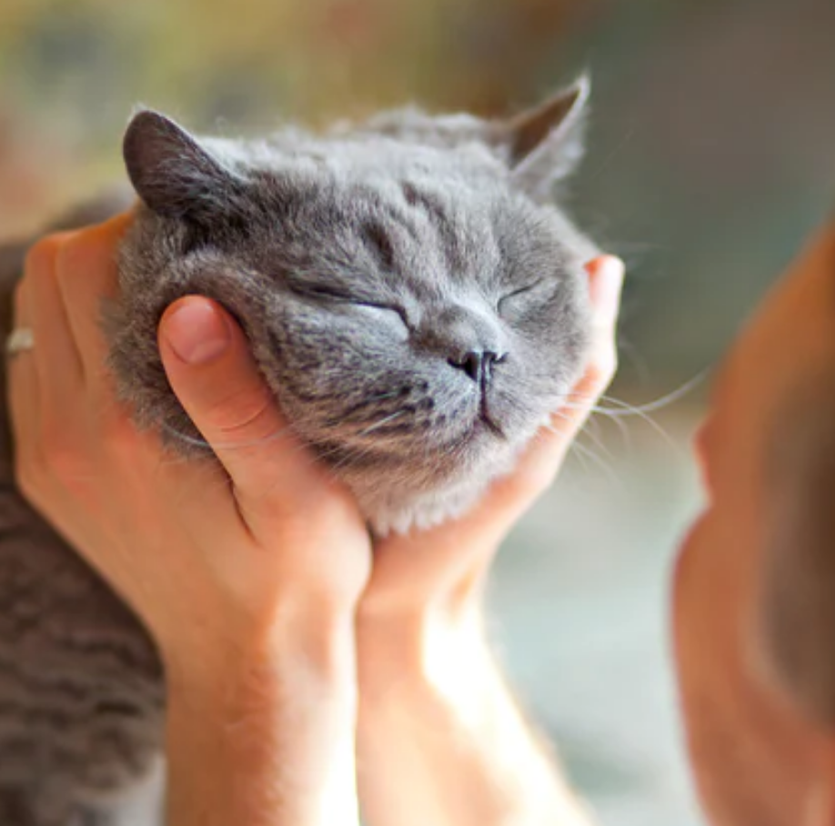
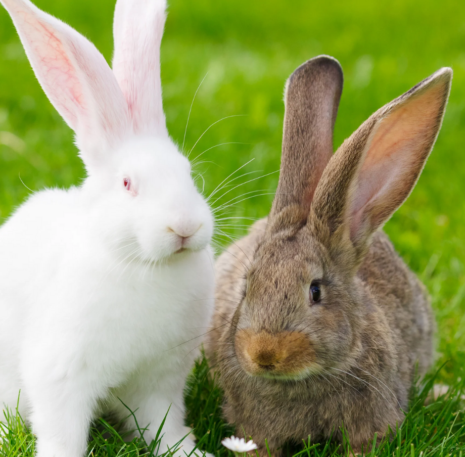

Here are some of the reasons why you should get a pet!
| To Keep You Fit ------------------------- Since pets require frequent exercise and playtime, owning a pet can increase your opportunities for exercise. It will help you with your mental, emotional, and physical health. In fact, being physically healthy can help you live longer. |
| To Help You Become More Social ---------- Owning a pet would significantly improve your social relationships. They can help you meet new people and socialize because dog owners often stop and chat to one another when walking, hiking, or at a dog park. Some social clubs have even been founded for pet owners that have same interests. |
| To Improve Your Mood And Well-being ---- Pets may help you unwind after a long day at work. They can provide you with relief and comfort. According to a 2003 research, petting an animal after a stressful situation lessened anxiety. |
| To Have The Best Companions ------------ Pets are not prejudiced. They would not be concerned with your social or economic standing and would accept you for who you are. Their company may help you avoid sickness and possibly add years to your life. Caring for an animal may make you feel loved while diverting your attention away from your troubles. |
Want to know more?
15 reasons why having a pet is good for you and your family Insider |
 The Health and Mood-Boosting Benefits of Pets HelpGuide |
 Why pets are the perfect companion for the elderly Helping Hands |
 8 Top Reasons You Should Get a Pet PetHelpful |
 10 Benefits of Owning a Pet Animal Friends |
 5 Ways Pets Can Improve Your Health Web MD |